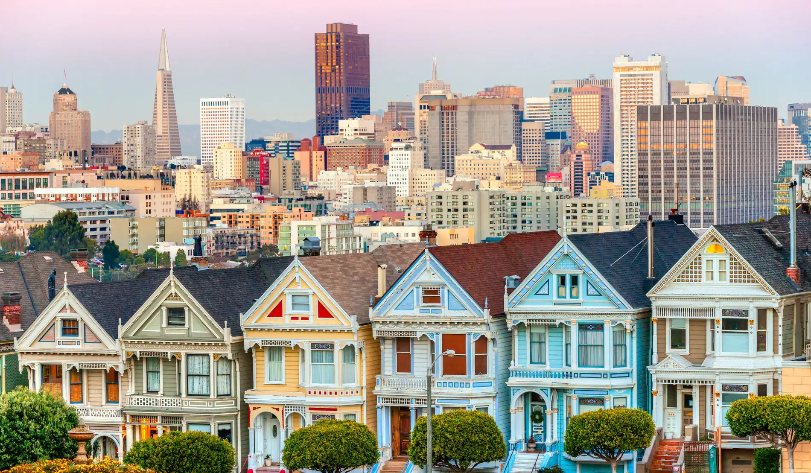
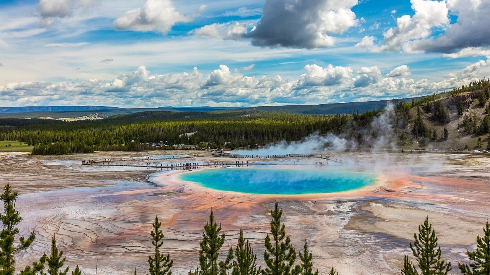

O que visitar
- Nova York: Estátua da Liberdade, Times Square e Central Park.
- San Francisco: Golden Gate e bairros charmosos.
- Parque Nacional de Yellowstone: geisers e vida selvagem.



Links para mais informações
Dicas para viajar
- Prefira transporte público em grandes cidades para evitar trânsito.
- Tenha um cartão multimoedas e controle as taxas de câmbio.
- Pesquise horários de atrações para aproveitar ao máximo o passeio.